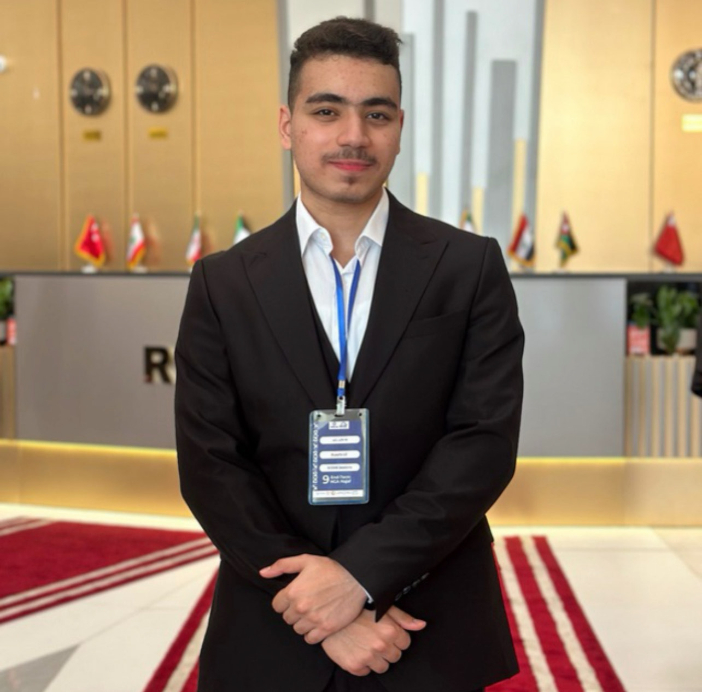

Taha Talib Rasheed is a dedicated medical student at the University of Baghdad, Al-Kindy College of Medicine. Alongside his medical studies, Taha has a strong passion for scientific research and innovation. During his time with the Iraq Youth Scientist Team (IYST), he conducted groundbreaking research on the effects of radon gas in oil extraction systems. His work explored how radon, a naturally occurring radioactive gas, could influence the efficiency and environmental impact of oil extraction processes. Taha's research highlighted the potential risks of radon exposure to workers in the oil industry and proposed innovative solutions to mitigate these risks while optimizing extraction methods.
Taha's research has been recognized for its interdisciplinary approach, combining principles of medicine, environmental science, and engineering. He has presented his findings at several national conferences, earning accolades for his ability to bridge the gap between medical science and industrial applications. Taha is also an active member of his university's research society, where he mentors younger students and encourages them to pursue innovative projects.
In addition to his academic and research pursuits, Taha is deeply committed to community service. He has volunteered in numerous health awareness campaigns, educating the public about the dangers of radon exposure and promoting safety measures in industrial settings. Taha's ultimate goal is to contribute to the development of safer and more sustainable industrial practices, ensuring a healthier future for both workers and the environment.